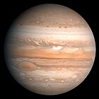

information about jupiter

Jupiter is the largest planet in the Solar System. It is the fifth planet from the Sun. Jupiter is classified as a gas giant. This is because it is very big and made up of gas.
The other gas giants are Saturn, Uranus and Neptune. Jupiter has a mass of 1.8986×1027 kg or about 318 Earths.
This is twice the mass of all the other planets in the Solar System put together.Jupiter was known to the ancient Romans.
They named it for the Roman god Jupiter. Jupiter is the third brightest object in the night sky. Only the Earth's moon and Venus are brighter.
Jupiter has at least 95 moons. 75 of these moons are very small at less than 5 km wide. The four main moons are Io, Europa, Ganymede and Callisto.
These moons are the largest. These four are called the Galilean moons. They are called this because they were discovered by the Italian astronomer Galileo Galilei.
Ganymede is the largest moon in the Solar System.